Nakadomari
Nakadomari · Aomori
Nakadomari
Highlighted on the Aomori map.
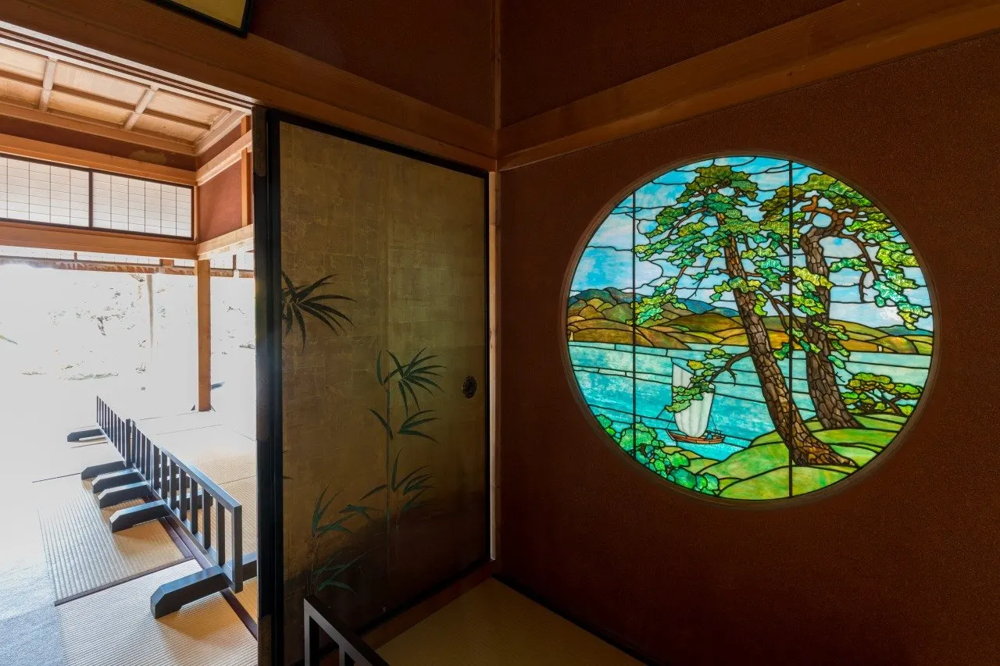
Stay
福助旅館
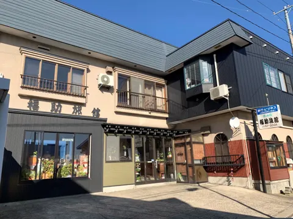
Fukusuke Ryokan
Ryokan inn in Nakadomari, Aomori.
Dining
はくちょう亭奈良屋
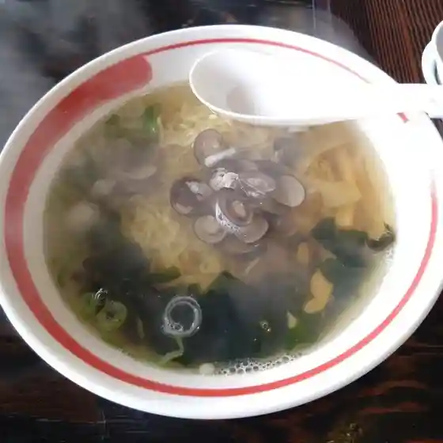
Hakuchou Tei Nara Ya
海人
Ama
大福
Daifuku
らーめん一番亭
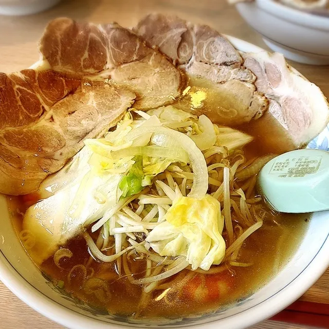
Raamen Ichiban Tei
かもめ寿司
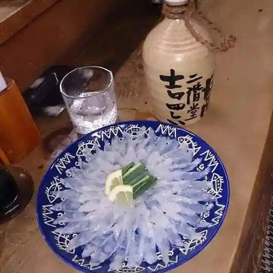
Kamome Sushi
福助旅館
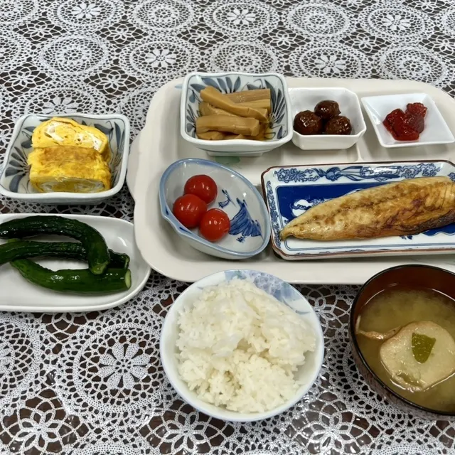
Fukusuke Ryokan
磯や
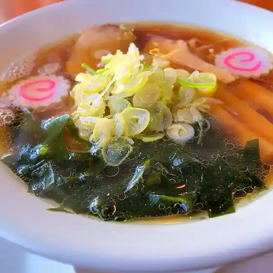
Iso Ya
マル清食堂
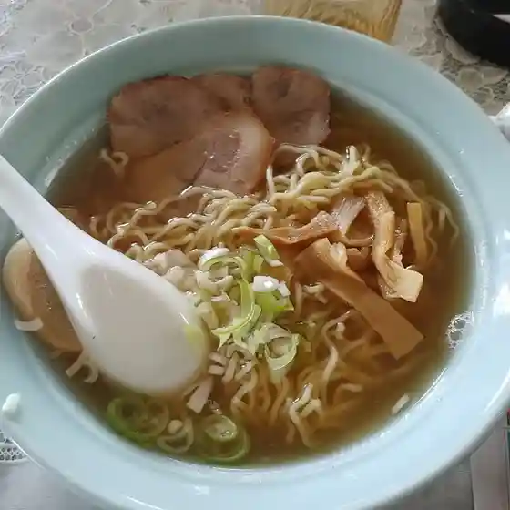
Maru Kiyoshi Shokudou
津軽小泊館
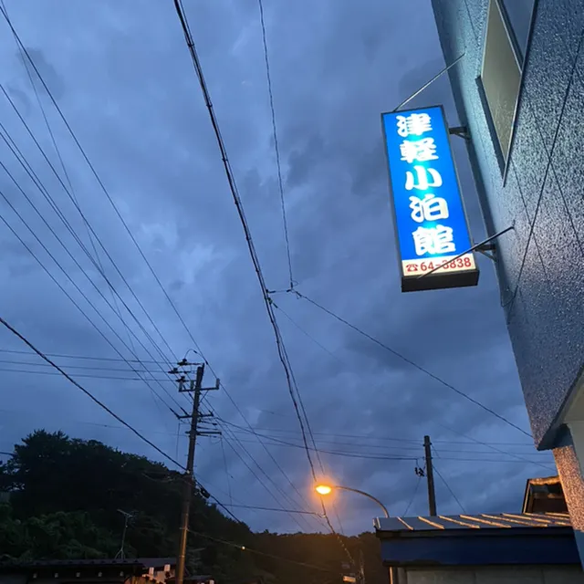
Tsugaru Kodomari Kan
アイドル・おやつの店
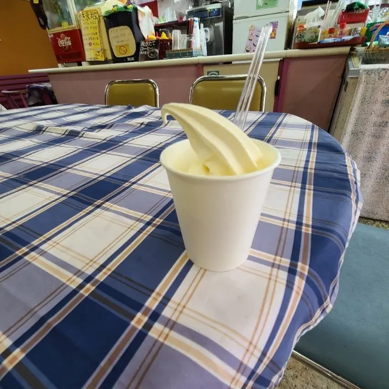
Aidoru Oyatsuno Mise
坂田 旅館
Sakata Ryokan
しじみ亭 奈良屋
Shijimi Tei Nara Ya
澤田仕出し店
Sawada Shidashi Mise
深海魚
Shinkaigyo
じゅうもんじ屋
Juumonji Ya
韓国料理ソウル
Kankokuryouri Souru
仕出し処隆佐
Shidashi Tokoro Ryuusa
湯らゆら食堂
Yu Rayura Shokudou
くつろぎダイニング哲
Kutsurogi Dainingu Satoshi
ファミリーマート 小泊店
Famiriimaato Kodomari Mise
盛漁丸
Jou Ryou Maru
すし定
Sushi Tei
Cafe&Bal 田家
Cafe&Bal Taya
里のれすとらん
Sato Noresutoran
Sights
Miyakoshi House Annex/Garden
The premises of the Miyakoshi family's residence contain buildings such as a main house, a library, a rice storehouse, and an annex, as well as gardens.
Gongenzaki
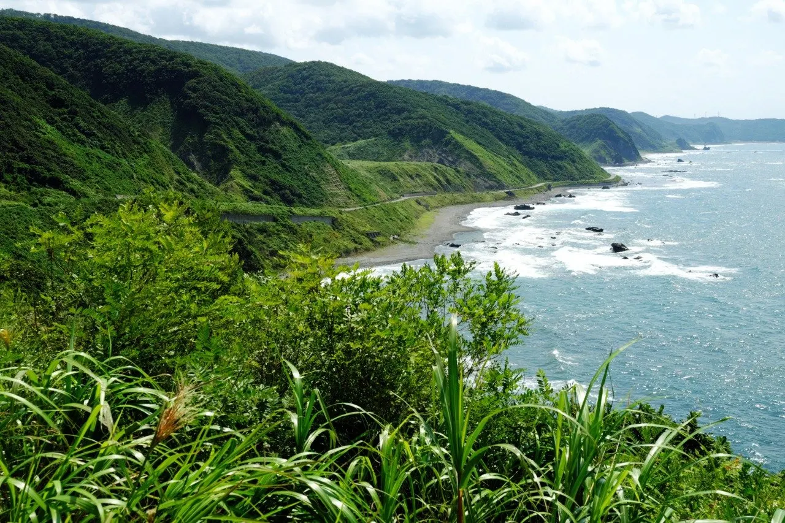
This is a huge rock mountain sticking out from the Kodomari. It extends for approximately 6.5 km at an elevation of 229 meters, suggesting the shape of a lion lying down, and is considered one of the two most picturesque capes in Japan alo
Chokandai Observatory
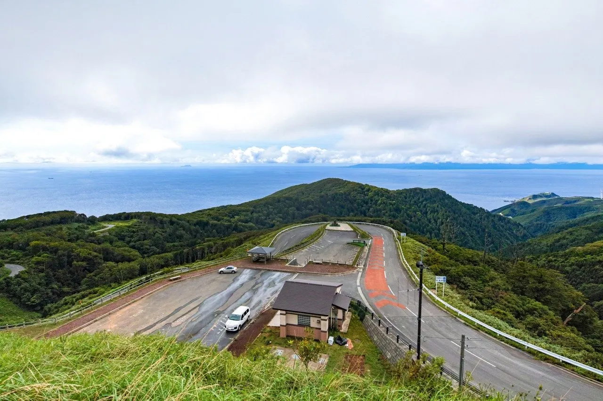
Lookout at the highest point of the Tappaku Line (Route 339), with views of Hokkaido and Mt. Iwaki.
Nanatsu Falls
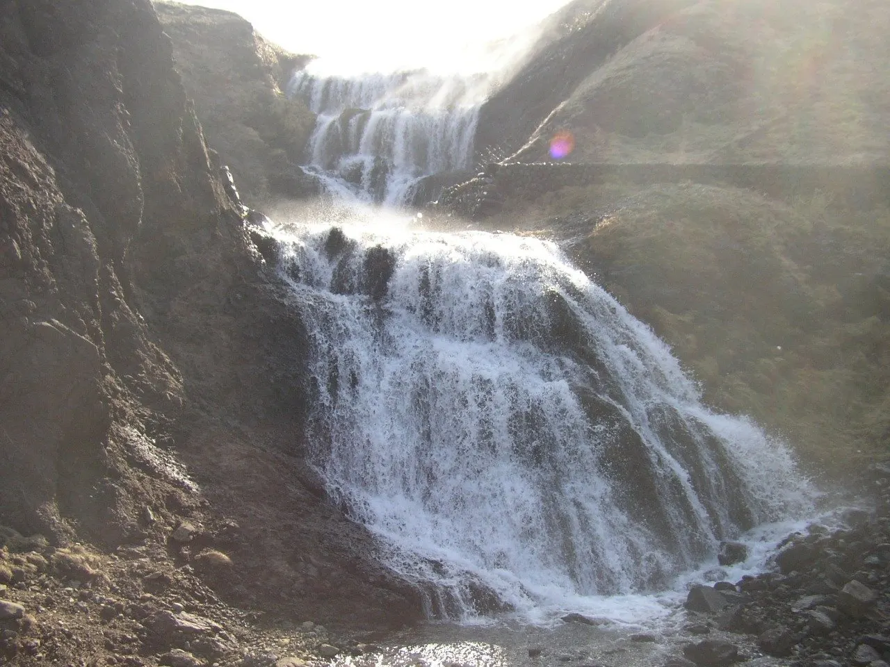
21 m waterfall on the Tappaku Line that drops over seven rock steps.
Kintamamejo Puppet Theater
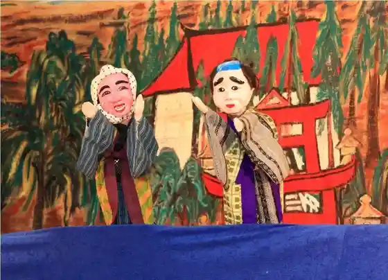
Theater for the traditional Tsugaru puppet play created in 1907.
Tsugaru Novel Statue Memorial Hall
Memorial to Dazai Osamu's novel "Tsugaru" overlooking the school ground where he reunited with his nanny Take.
Roadside Station Kodomari Pontomari
Roadside station on the Tappaku Line with local squid and rockfish, a restaurant and a market.
Fudo Falls
7 m waterfall once used by mountain ascetics, about 30 minutes' walk from Takinosawa Sabo Island.
Orikoshinai Auto Campground
Campground opposite Roadside Station Kodomari next to Orikoshinai beach.
Yurapark Nakadomari
The town's only hot spring, opened in 2024, with sauna, cold bath and outdoor bath.